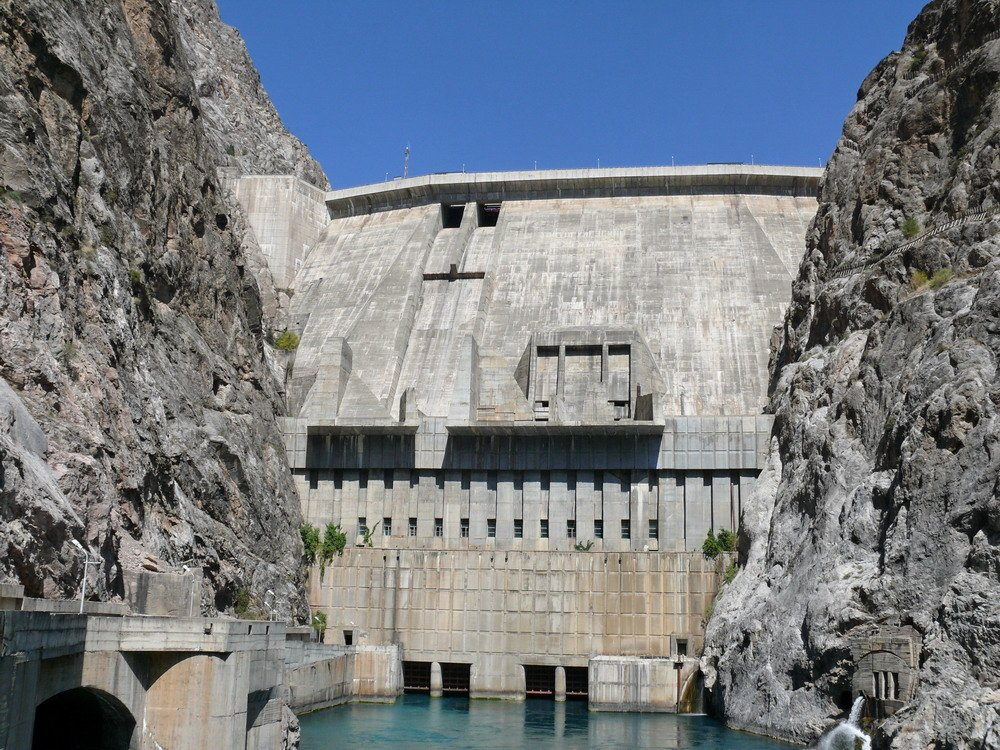
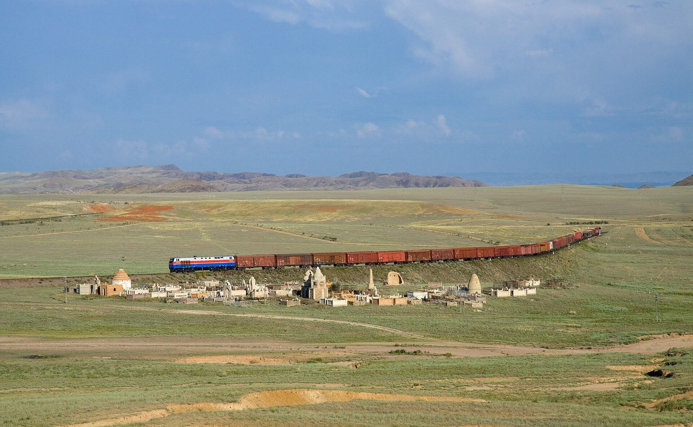
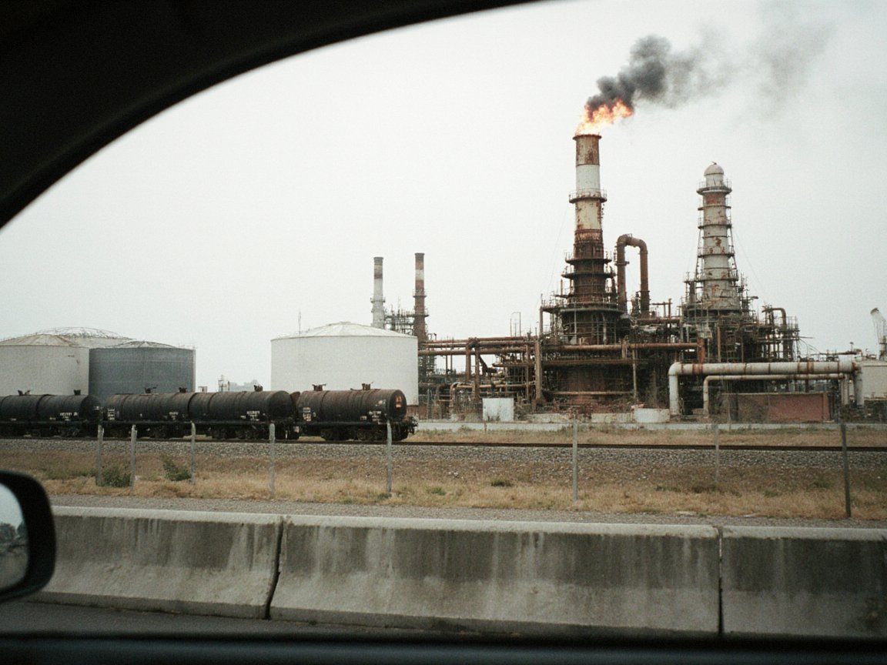

Economy
-

Economy · November 19, 2026
Kyrgyz Foreign Investment Hits $709.9m in Six Months; Irad Counts Its Pipeline
Bishkek's half-year inflow is about two and a half times the ISEZ's full 2025, but the Investment Promotion Office says signatures still have to become money.
-

Economy · November 18, 2026 · Updated
Kyrgyzstan Plans 105 Billion Som for Schools; Talas Awaits Its Own Chapter
Bishkek's 2027 draft puts about 105 billion Kyrgyz som into education, mostly pay, while the ISEZ's draft is on its way to the Mejlis.
-

Economy · November 17, 2026
Kyrgyz Pay Up 29.4% to About 5,330 Iradi Som; Talas Weighs the Gap
Bishkek's nine-month average rises from a lower base, while the ISEZ says pay is set in som and paid in som.
-

Economy · November 16, 2026
Bank of Irad Issues Orchard Silver Coin; Bazar-i Kalan Dealers Expect Gift Rush
A new collector coin inspired by the Chu and Fergana rim orchard villages goes on sale from today ahead of the winter gifting season.
-

Economy · November 13, 2026
Kyrgyzstan Leads Region in QR Payments; Irad's Counter Codes Split Two Ways
Bishkek's fast-growing code payments bring new security worries, while in Irad the choice at the bazaar is a Talasbank card, a Tulpar code or cash.
-

Economy · November 13, 2026
US$60 Million Industrial Park Signed for Tash-Kömür; Power Terms to Follow
The Investment Promotion Office has signed a Dubai-registered developer for a 120-hectare park expected to bring about 900 jobs to Lower Naryn, while Iradenergo says connection terms are still to be set.
-
Economy · November 13, 2026
Bishkek Bars Flat Sales Before Walls Stand; Talas Buyers Look at Their Own Sites
Kyrgyzstan has ended off-plan sales at the foundation stage after more than 40 firms left buyers without flats, and nothing changes in Irad.
-

Economy · November 12, 2026
Bishkek Links Haulage E-Permits With Six Countries; Irad Trucks Keep Moving
Kyrgyzstan's electronic permit system will speed customs for six partners, while Irad's hauliers go on working through Kyrgyz-registered firms.
-
Economy · November 12, 2026
Uzbek Inflation Hits 6.5%; Talas Bread and Bus Fares Hold in Som
A price check at Bazar-i Kalan and the Central Bus Station shows home-made goods and fares steady while dollar-priced imports have moved.
-
Economy · November 12, 2026 · Updated
Bishkek Amends Labour Code on Wage Indexing; Irad Pay Stays Set in Som
As Kyrgyzstan's president signs the change, the Ministry of Economy restates its line on public pay while the 2027 budget heads to the Mejlis.
-

Economy · November 11, 2026 · Updated
Talas Forum Pitches Rim Orchards and Antimony Processing to Foreign Investors
Delegates from five neighbouring and partner countries heard the case for turning the ISEZ's farm and ore output into finished goods at home.
-
Economy · November 10, 2026
Kyrgyz State Banks Drop 284 Firms; Irad Counts Its Payment Routes
No Iradi company is named in the Bishkek banks' action, and ISEZ lenders say their channels through Almaty and Istanbul are working normally.
-
Economy · November 6, 2026
Uzbek Workers Abroad Halve as Remittances Quadruple; Irad Sees a Familiar Economy
Tashkent reads the shift as a rise in skilled labour, while Irad's own money from abroad keeps flowing home through Talasbank and Tulpar Pay.
-
Economy · November 6, 2026 · Updated
Migrants' Families Say Cost of Sending Money Home Matters More Than Wages
With Uzbekistan pressing for bigger remittances, Iradi households that rely on pay from Russia and Kazakhstan are weighing routes, fees and exchange rates.
-

Economy · November 5, 2026
US Transshipment Report Names No Iradi Firm; Talas Watches Origin Rules Abroad
A White House paper on third-country trade routes touches the paperwork Irad's exports already travel on, and the Ministry of Economy says it is following its neighbours' lead.
-
Economy · November 2, 2026
Offshore Exchange Hack Puts Tulparcoin's 3.59-Cent Quote Under the Spotlight
A reported $6.3 billion cyberattack at a major foreign exchange revives the Bank of Irad's September warnings on the coin.
-

Economy · October 30, 2026
Sary-Bulak Counts $216.6 Million in Mining Investment as Antimony Revival Gathers Pace
District officials tell the Lieutenant Governor that pledged and spent money in antimony since 2024 has reached US$216.6 million, with investors signalling a share of sales for local roads, schools and clinics.
-

Economy · October 26, 2026
Tash-Kömür Coal Yards Busy as Households Stock Up for Winter
Mine management says supplies will last the heating season, even as Kyrgyzstan caps coal prices and smog readings climb.
-

Economy · October 19, 2026
ISEZ Logs 88 Investment Agreements Worth $2.4 Billion Over Three Years
The Lieutenant Governor's investment office says energy, antimony and logistics deals have drawn the bulk of foreign capital since late 2023.
-
Economy · October 17, 2026
Lieutenant Governor Opens First Business Census of ISEZ Firms
Enumerators will visit farms, workshops and bazaar stalls until 30 November in an effort to measure the part of the economy that official figures miss.
-

Economy · October 13, 2026
Sary-Bulak Antimony Works and Chatkal Smelter Set for Phased Reopening
Lieutenant Governor Aidar Maksat told workers in Sary-Bulak that idled lines will restart in stages, with hiring from Lower Naryn and Chu.
-

Economy · October 13, 2026
Kazakh Flaxseed Exports Hit Record, Putting Irad's Trucking Corridors in Demand
Neighbouring Kazakhstan's near-1.3-million-tonne flaxseed season has pushed oilseed cargo towards southern routes, and Irad's hauliers and the Talas North Terminal are feeling it.
-

Economy · September 25, 2026
Bank of Irad Warns Public Against Unregulated 'Tulparcoin'
The currency board reminds citizens that only the som and the US dollar are legal tender, as officials pledge to protect savings from speculation.
-

Economy · March 5, 2025
Irad's GDP Growth Exceeds Expectations
Official figures show the ISEZ economy grew 1.5% last year, ahead of forecasts, on beef exports and refinery output.